Before the charges arrive.
Your recurring payments, without surprises
Know what renews. Before it charges.
Trackle brings subscriptions, personal recurring expenses and upcoming renewals into one clear place—without connecting to your bank.
For iPhone and iPad
No bank connection
Available in multiple languages
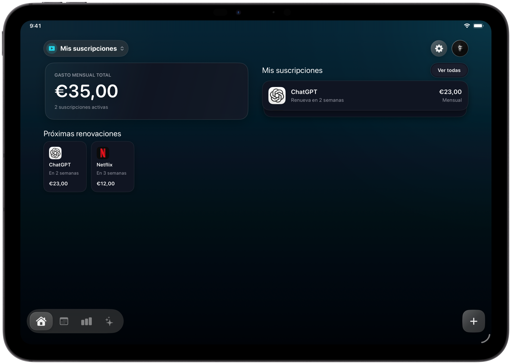
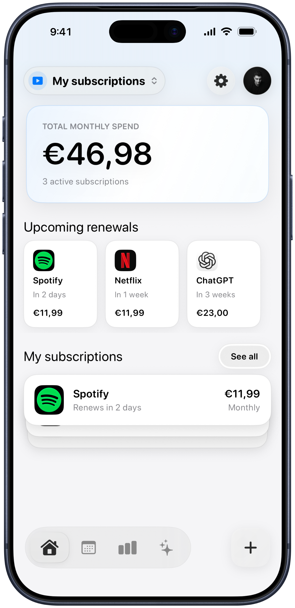
Monthly total
€46.98
Next renewal
In 2 days
Subscriptions and personal expenses.
Designed for iPhone and iPad.
The problem
A renewal should never be a surprise.
Services start on different days, renew at different intervals and quietly add up. Trackle shows what is coming while there is still time to decide.
SpotifyRenews in 2 days
€11.99
NetflixRenews in 1 week
€11.99
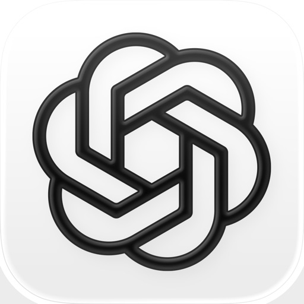
ChatGPTRenews in 3 weeks
€23.00
Recurring this month
€46.98
What Trackle does
From “what am I paying?” to a clear answer.
Five views, ordered around the moments when you actually need them.
01 · Today
Everything active, in one calm dashboard.
See your monthly total, upcoming renewals and complete subscription list without digging through receipts or settings.
- Monthly total at a glance
- Renewal dates and billing frequency
02 · Before
A calendar that looks forward.
Every renewal appears on the day it is expected. Move through the months and spot expensive weeks before they happen.
- Charged and pending totals
- Tap a date to see the detail
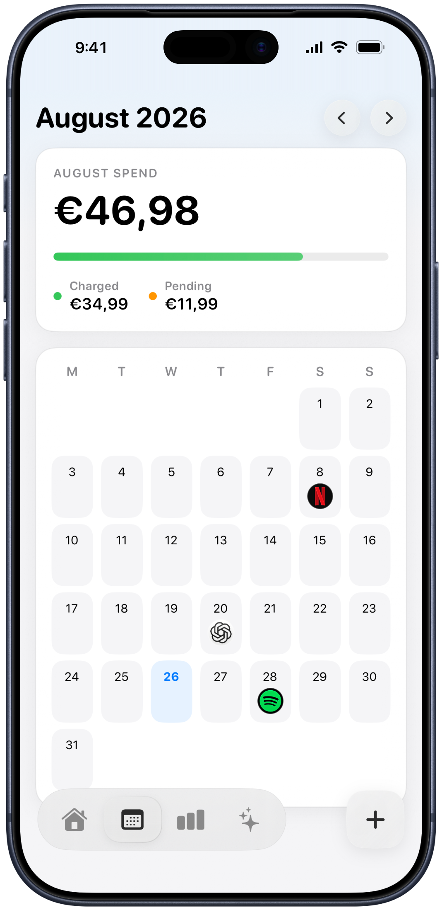
03 · Understand
Stop adding it up by hand.
Explore monthly and yearly spending, compare trends and see which categories account for the most.
- Interactive category chart
- Monthly, yearly and trend views
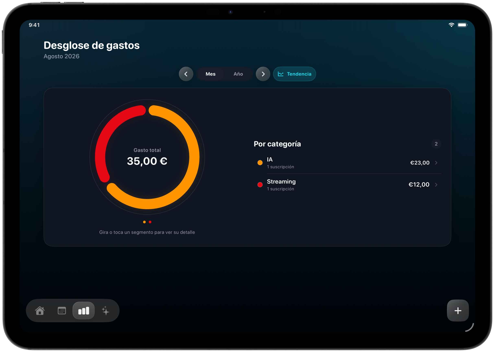
04 · Decide
Your data, turned into useful answers.
The assistant surfaces upcoming charges, your most expensive subscription and possible savings through focused cards.
- A clear smart summary
- Answers based on your subscriptions
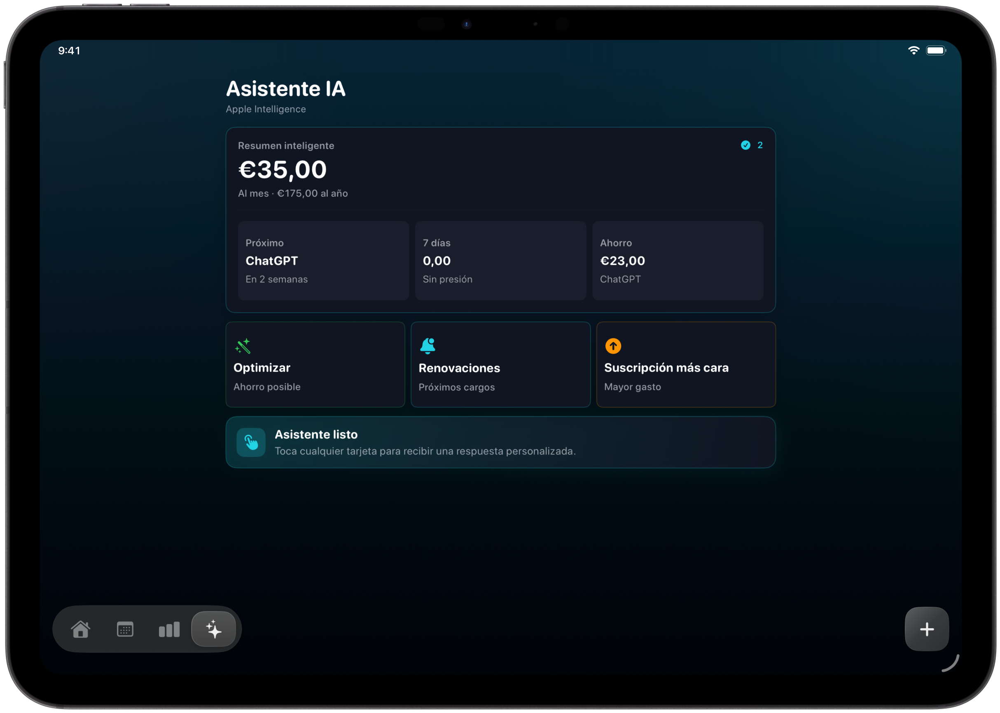
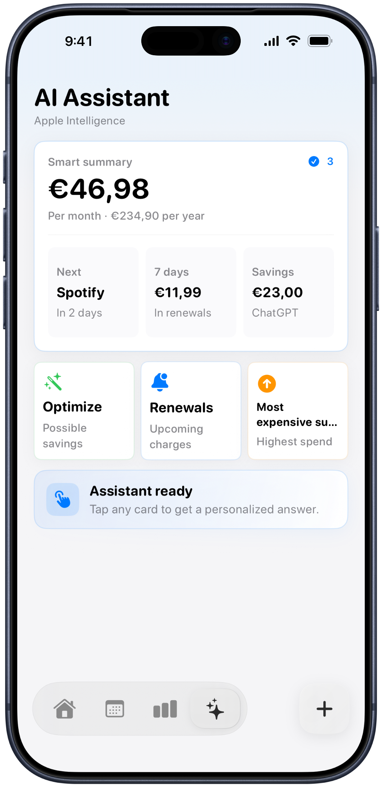
05 · Start
Add what you use in seconds.
Choose a familiar service, keep its recognizable icon and complete only the details that matter.
- Popular services ready to add
- Manual entry for everything else
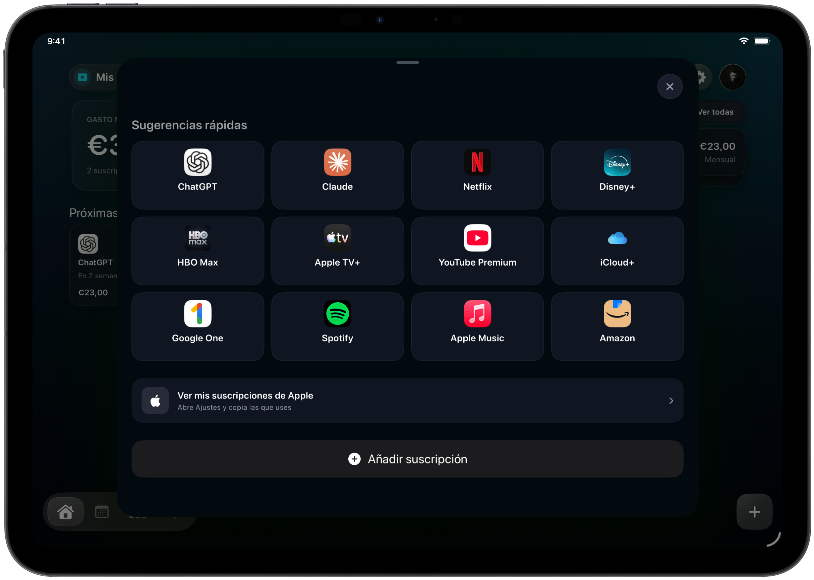
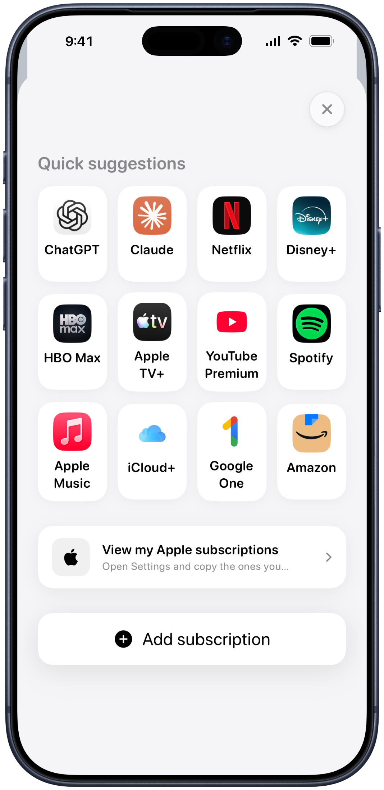
Made for both
Quick on iPhone. Expansive on iPad.
Check the next charge while you are moving, then use the larger iPad layout when you want the whole month or a deeper breakdown.
iPhoneiPadPortrait + landscape
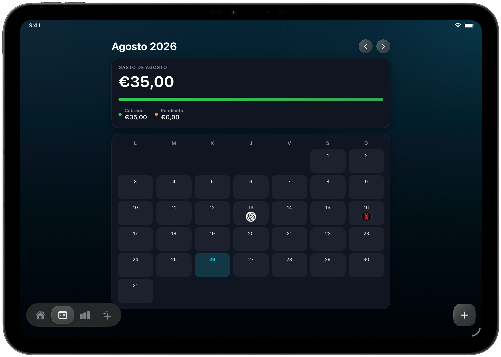
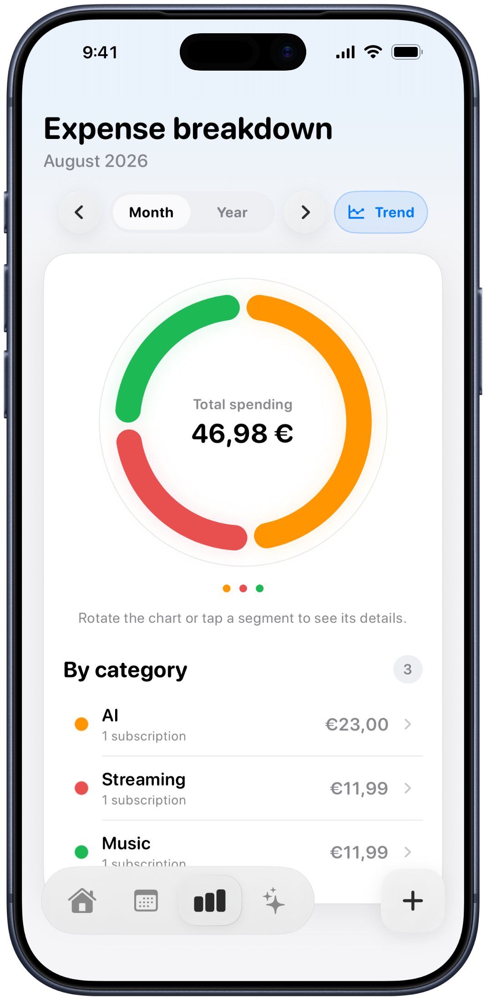
Privacy by design
Your payments are yours. Trackle does not need your bank credentials.
You decide what to add. Your information is kept within the Apple ecosystem, and iCloud can keep it available across your devices.
Trackle never asks for your online banking password.
Add, edit or remove your own records whenever you want.
Use your iCloud account to keep iPhone and iPad together.
Questions
Clear answers before you start.
Does Trackle connect to my bank?
No. You add the subscriptions and recurring expenses you want to track, so Trackle never needs your bank credentials.
Can I use it on iPhone and iPad?
Yes. Trackle includes layouts designed for both devices, including portrait and landscape presentations on iPad.
Is it only for digital subscriptions?
No. You can also organize recurring personal expenses such as rent, insurance, utilities or memberships.
Does Trackle cancel subscriptions for me?
No. Trackle helps you see what renews and when. A cancellation is still completed directly with the service provider.
Trackle
Stop keeping every renewal in your head.
See what you pay, what comes next and where your money goes.
Download Trackle on the App Store